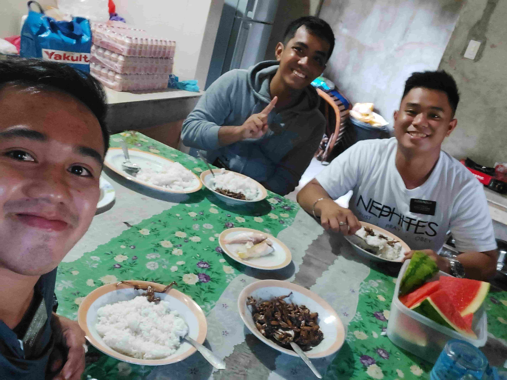
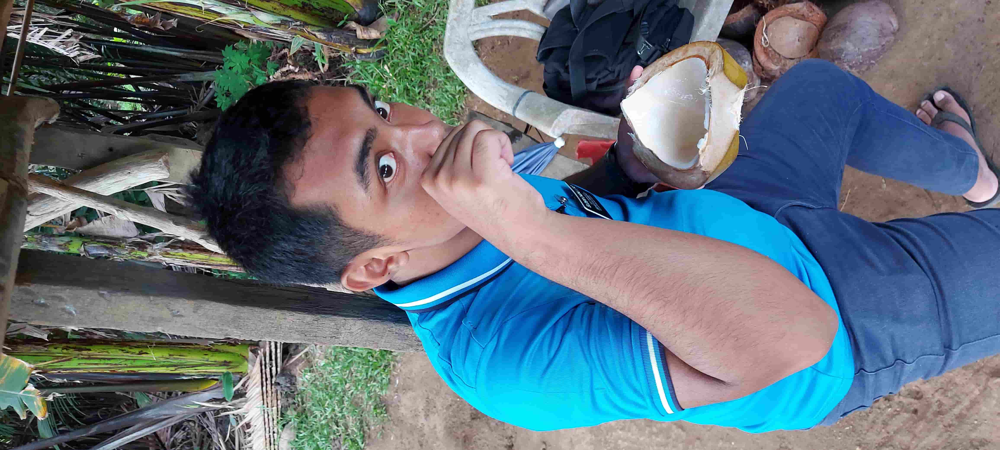
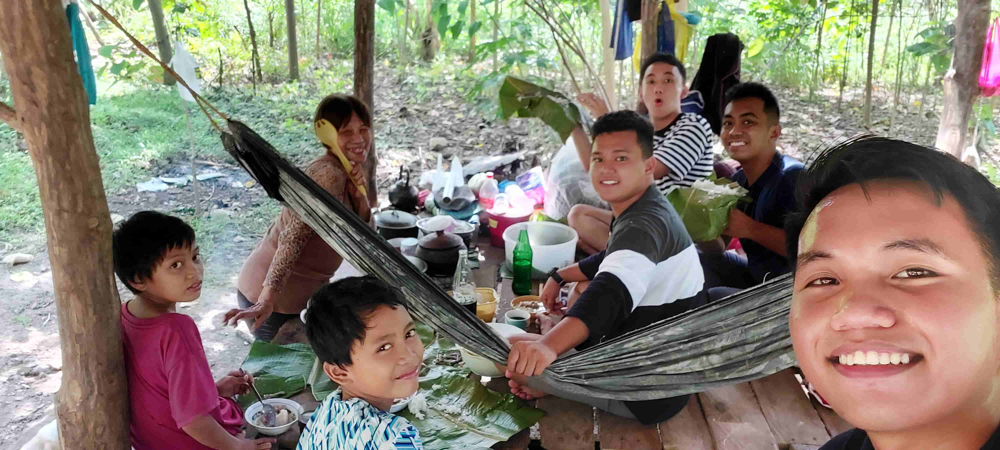

Food can be distinguished as one of the great
connectors of different cultures. Despite being
the same country, my areas in Mindanao opened
me to tastes I have never known before. What
makes it more special for me is the people I
shared these memories with.

My companions and I are eating Adobo. But this is not
your ordinary Adobo. What we are eating are Frog legs
Adobo. What they say is true, it tastes like chicken,
except for the part that it is bony.

Provinces are graced with coconut trees. Some of the
members I work with own one, so they fed us. Coconut
straight from the tree tastes heavenly. The natural
coconut water really refreshes my soul and the coconut
meat: a delicacy!

In Japan, they have these riceballs called Onigiri.
In the Philippines, our version of it is called
Pastil. I will not learn that if I had not served
my mission! Pastil is rice topped with shredded meat,
either pork or chicken, and covered in banana leaves.
Pastil is everyone's go-to lunch in Mati.